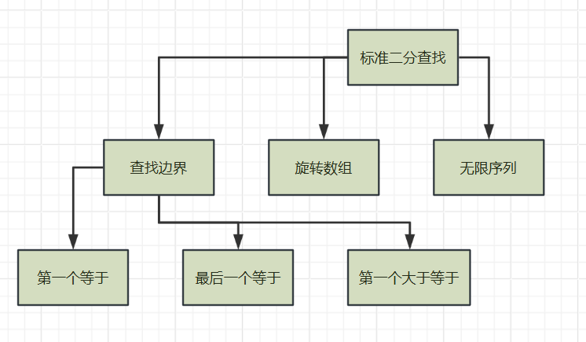

intbinarySearch(const vector<int>& nums, int target){ int left = 0; int right = nums.size() - 1; while (left <= right) { int mid = left + (right - left) / 2; // 防止溢出 if (nums[mid] == target) { return mid; } elseif (nums[mid] < target) { left = mid + 1; } else { right = mid - 1; } } return-1; // 未找到 }

二分查找的变种
3.1 查找第一个等于目标值的位置
1 2 3 4 5 6 7 8 9 10 11 12 13 14 15 16 17
intfindFirst(const vector<int>& nums, int target){ int left = 0; int right = nums.size() - 1; int result = -1; while (left <= right) { int mid = left + (right - left) / 2; if (nums[mid] >= target) { right = mid - 1; if (nums[mid] == target) { result = mid; } } else { left = mid + 1; } } return result; }
3.2 查找最后一个等于目标值的位置
1 2 3 4 5 6 7 8 9 10 11 12 13 14 15 16 17
intfindLast(const vector<int>& nums, int target){ int left = 0; int right = nums.size() - 1; int result = -1; while (left <= right) { int mid = left + (right - left) / 2; if (nums[mid] <= target) { left = mid + 1; if (nums[mid] == target) { result = mid; } } else { right = mid - 1; } } return result; }
3.3 查找第一个大于等于目标值的位置
1 2 3 4 5 6 7 8 9 10 11 12 13 14 15 16
intfindFirstGreaterOrEqual(const vector<int>& nums, int target){ int left = 0; int right = nums.size() - 1; int result = -1; while (left <= right) { int mid = left + (right - left) / 2;
if (nums[mid] >= target) { result = mid; right = mid - 1; } else { left = mid + 1; } } return result; }